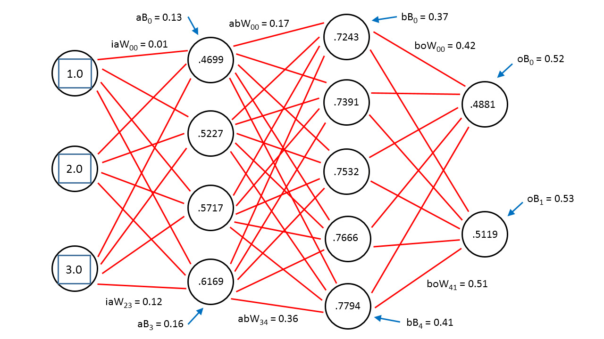

Can machines learn to program?
Federico Mon
2016-10-08
Created: 2016-10-07 Fri 08:56
First of all…
What will you do once you automate all your work?
What is “To program”?
Source code
def x(a, b, c): return (a + b) * c
Bytecode
>>> x = lambda a,b,c: (a + b) * c >>> x.__code__.co_code b'|\x00\x00|\x01\x00\x17|\x02\x00\x14S'
AST
TDD
def test_sort(self): my_list = [4, 3, 2, 0] my_list.sort() self.assertEqual(my_list, [0, 2, 3, 4])
class myList(list): def sort(self): return self.reverse() __builtins__.list = myList def test_sort(self): my_list = list((4, 3, 2, 0)) my_list.sort() self.assertEqual(my_list, list((0, 2, 3, 4)))
def test_sort(self): my_list = list((3, 4, 2, 0)) my_list.sort() self.assertEqual(my_list, list((0, 2, 3, 4)))
class myList(list): def sort(self): x = list(self[-1], self[-2], self[0], self[1]) self[0] = x[0] self[1] = x[1] self[2] = x[2] self[3] = x[3] __builtins__.list = myList def test_sort(self): my_list = list((3, 4, 2, 0)) my_list.sort() self.assertEqual(my_list, list((0, 2, 3, 4)))
Program testing can be used to show the presence of bugs, but never to show their absence!
Edgar Dijkstra
Lots of fuzz with Deep Learning lately
Alphago
Wired Cover Jun 2016
Can machines do TDD?
A very small example
Basic Multiplexor

A B Sel | Out ------------- 0 0 0 | 0 0 0 1 | 0 0 1 0 | 0 0 1 1 | 1 1 0 0 | 1 1 0 1 | 0 1 1 0 | 1 1 1 1 | 1
(a and not s) or (b and s)
AST
Prefix notation
OR AND A NOT S AND B S
AST
>>> import ast >>> tree = ast.parse("(a and not s) or (b and s)") >>> expr = ast.Expression(tree.body[0].value) >>> compiled = compile(expr, filename="<ast>", mode="eval") >>> a = True >>> b = False >>> s = True >>> d = eval(compiled) >>> print(d)
False
>>> import meta >>> source_from_ast = meta.dump_python_source(tree)
((a and (not s)) or (b and s))
from ast import ( BoolOp, UnaryOp, Or, And, Not, Name, Load, Module, Expr, NodeTransformer, NodeVisitor, copy_location, Subscript, Index, Str, dump )
def create_variable(variable_name): assert variable_name in variable_names return Name(id=variable_name, ctx=Load()) def create_not(tree): return UnaryOp(op=Not(), operand=tree) def create_or(args): assert len(args) > 1 return BoolOp(Or(), args)
Visitor and Transformer
class Visitor(NodeVisitor): length = 0 def generic_visit(self, node): self.length += 1 NodeVisitor.generic_visit(self, node)
def get_len(tree): v = Visitor() v.visit(tree) return v.length
Genetic Programming
Individuals
- Each one has its own DNA
- In nature: "…GATTACA…"
- In Genetic Algorithms, it can be "…0010100…"
- In our case, let's say it's: "OR AND A NOT S AND B S"
- So, why not simply the python AST?
As Genetic Algorithms
- Start with a population
- Evaluate them
- Select some individuals
- Mix them
- Mutate them
- Repeat
Evaluation
- In our case, how many unit tests the program passes
- For our multiplexor, there are only 8 unit tests
Mix them
You would need to extract two parts of two trees and interchange them.
Mutate them
Transformer
class Mutator(NodeTransformer): depth = 0 def some_visit(self, node): if self.depth > 2 and random.randrange(9) > 5: return create_something(max_depth=3) else: self.generic_visit(node) return node def visit_Name(self, node): self.depth += 1 return self.some_visit(node) def visit_UnaryOp(self, node): self.depth += 1 return self.some_visit(node) def visit_BoolOp(self, node): self.depth += 1 return self.some_visit(node)
def mutate(tree): return Mutator().visit(tree)
Good news
DEAP
Neural Networks
Mimics the brain
Use lots of data as training to learn
Input layer, hidden layers, output layer

Hidden layers can be very complex, depending on your needs

- a man is talking on a cell phone near a building.
- a white dog is running on gravel away from two people and a black and brown dog.
- a man is sorting his fruit at a fruit stand
Not Accomplished :(
“When in doubt, use brute force”
Ken Thompson
Is it any better than random?
- We should find out
- Let's generate random trees until we reach our goal.
Genetic programming results:
- Population size 100: average: 3.51 secs
- Population size 10: average: 4.63 secs
Random trees:
Average 100 executions: 3.40 secs
Answer
Not yet at least
“In the discrete world of computing, there is no meaningful metric in which "small" changes and "small" effects go hand in hand, and there never will be.”
Edgar Dijkstra
“Perfect is the enemy of good”
Voltaire
Computers not yet capable to “reason”
Programming requires “Divide and Conquer”
That was just boolean logic
What about detecting infinite loops in huge programs?